Mapping the 2024 Kelantan flood and the 2026 Kedah paddy season with NISAR and Sentinel-1 radar, NASA OPERA products and an open web map
Floods and planting in Malaysia both happen under thick monsoon cloud, which blinds ordinary satellite cameras exactly when people need them. Synthetic aperture radar (SAR) carries its own signal and sees the ground through cloud, day or night. We built an open, browser-based map that turns NASA radar data into answers people can act on. For the Kelantan flood of November–December 2024 we processed six Sentinel-1 passes from NASA’s OPERA programme with a before-and-after change test. Our map shows about 20,300 ha of new flood water in seven districts on 29 November (range 17,200–20,300 ha). It agrees with NASA’s own water map at an F1 score of 0.75 on land. About 244,000 people lived within 250 m of that water, and about 4,100 ha stayed flooded on two or more passes, mostly in Tumpat and Pasir Mas. For the 2026 Kedah rice season we used seven passes from NISAR, the new NASA-ISRO L-band radar. The share of cropland holding water rose from 2% on 23 September to 45% on 1 November, later than the MADA irrigation schedule in a drought year. NISAR found far more shallow field water than C-band Sentinel-1 did. The web map adds per-spot radar histories, rainfall, an AI analysis whose every number is checked by code, and a live view of the current monsoon.
Keywords: synthetic aperture radar; NISAR; L-band; Sentinel-1; OPERA; flood mapping; paddy inundation; change detection; Otsu threshold; Kelantan; MADA; web GIS
| Project name | Project SARS Amoeba: Tracking Shape-Shifting Water Through Monsoon Clouds with NISAR Radar (web app: “Radar water map” / “Peta air radar”) |
|---|---|
| Summary | An open web map that uses NASA radar to show where flood water spread in Kelantan (2024), how long it stayed, how many people lived beside it, and when water reached Kedah’s rice fields (2026), with every number traced to its source. |
| Demo and videos | 30-second demo and 3–5 minute video: [Google Drive links, “Anyone with the link: Viewer”] |
| Software link | project-sars-amoeba.vercel.app · code: github.com/LemonAidLee/NASA-web |
| NASA data | NISAR L2 GCOV; OPERA RTC-S1 and DSWx-S1; NASA POWER (MERRA-2) rainfall; NASA GIBS imagery; ASF DAAC and CMR catalogues (Section 2, Table 1) |
| Partner and other data | ISRO (NISAR partner); ESA Copernicus Sentinel-1 and WorldCover; EC JRC Global Surface Water; WorldPop; DOSM boundaries; OpenStreetMap (all cited in References) |
| Use of AI | Claude (Anthropic) for brainstorming, research, data analysis and coding; AI district analysis reviewed by the team, with every number checked by code; no AI runs in the page (Section 3.7) |
In late November 2024 Kelantan had one of its worst floods on record. The state police chief called it “the worst in history” [21], and by 1 December 97,128 people from 30,017 families had been affected [19]. On 29 November alone, 65,993 people were in 244 relief centres, with Pasir Mas holding the most at 22,486 [18]. Kelantan also recorded the largest flood losses of any state in 2024, RM263.0 million [20].
Two years later, 300 km to the north-west, a quieter water problem was unfolding. The Muda Agricultural Development Authority (MADA) granary in Kedah grows about 37% of Malaysia’s rice [22]. For Season 2/2026 MADA planned to release water to 99,489 ha in three phases starting on 23 September, 3 October and 13 October [23]. But on 17 September its dams held only 35.76% of capacity, and irrigation “will depend entirely on the effectiveness of rainwater runoff” [24].
Both stories share one obstacle: monsoon cloud. Optical satellites such as Landsat and VIIRS photograph the tops of clouds, not the ground beneath them, for days at a time. Disaster teams, farmers and planners lose their best overview exactly when water is moving fastest.
Synthetic aperture radar sends microwave pulses sideways towards the ground and records the echo that comes back, called backscatter [17]. Because the radar brings its own signal, it works at night and passes through cloud. Calm water acts like a mirror and reflects the pulse away from the satellite, so it looks very dark. Rough ground, buildings and plants scatter some energy back and look brighter. Radars also send and receive in different polarisations: HH means sent and received horizontally, HV means sent horizontally and received vertically. HH is most sensitive to open water and to “double bounce” off water and stems. HV grows as leaves and stems twist the wave, so it tracks plant growth.
NISAR, the NASA-ISRO Synthetic Aperture Radar, launched on 30 July 2025 [1]. It carries an L-band radar with a wavelength of about 24 cm, much longer than the 5.5 cm C-band of Sentinel-1 [8]. Longer waves reach further into crops and canopies, so NISAR should see water under plants better. NASA’s pre-launch plans promised flood maps “twice every 12 days” and crop-area maps “every two weeks” [25, 26]. Validated NISAR products became public on 21 October 2026, and provisional data covered the weeks before [2].
NISAR has not yet seen a Malaysian monsoon flood, so we split the work. We map the 2024 Kelantan flood with Sentinel-1, using NASA’s analysis-ready OPERA products. We map the 2026 Kedah paddy season with NISAR. The same physics applies to both: dark and smooth means water. In Kelantan it reveals a disaster, and in Kedah it reveals farmers at work.
This is where our name comes from. “SARS” stands for synthetic aperture radars, the instruments we read. The “amoeba” is the water they watch: a shapeless body that spreads, splits and shrinks from one pass to the next, whether it is a flood moving across the delta or irrigation water creeping into a rice granary.
The “Dancing with the SARs” challenge asks teams to use SAR to explain why a surface is changing, which polarisations show the change, and what NISAR could do next. We set five objectives:
Kelantan (flood). The radar box covers 101.8–102.6°E and 5.6–6.3°N, the lower Kelantan River basin and its delta. We report numbers for seven districts defined by the Department of Statistics Malaysia (DOSM) boundaries [9]: Tumpat, Kota Bharu, Pasir Mas, Bachok, Pasir Puteh, Machang and Tanah Merah. The basin covers about 12,000–13,000 km², more than 85% of the state, and overflows regularly between November and February [27].
Kedah (paddy). The box covers 100.2–100.6°E and 5.9–6.5°N, the heart of the MADA granary around Alor Setar. We report numbers for Kota Setar, Kubang Pasu, Pokok Sena and Pendang. About 63% of Pendang lies inside the radar box; the rest has no data in this study.
Table 1 lists every dataset. All NASA data are free and open; the pipeline downloads about 530 MB in total. It reads only the Kedah window of each NISAR file over the internet rather than whole files of about 5 GB.
Table 1. Datasets used, their role and resolution.
| Dataset (provider) | Role in this project | Resolution / count |
|---|---|---|
| NISAR L2 GCOV, frequency A, HH and HV (NASA/JPL, ISRO; via ASF DAAC) [2] | Kedah field water, seven passes on two tracks; six provisional and one validated | 10 m, averaged to 30 m; 7 granules |
| OPERA RTC-S1 V1, VV (NASA/JPL; Sentinel-1A) [3] | Kelantan radar brightness for flood detection, six passes | 30 m; 75 burst granules |
| OPERA DSWx-S1 V1 (NASA/JPL) [4] | NASA’s own water map: agreement checks in both areas | 30 m; 24 + 16 tiles |
| NASA POWER daily precipitation, PRECTOTCORR (MERRA-2) [10, 11] | Daily rainfall over each study box | ~0.5° × 0.625°, 4 points averaged |
| NASA GIBS imagery and CMR / ASF Search catalogues [12, 13] | Satellite photo background; live “newest pass” search; imagery-only views | Web map tiles |
| JRC Global Surface Water, occurrence 1984–2021 (EC JRC/Google) [5] | Normal-water mask (water in at least 80% of months) | 30 m |
| ESA WorldCover 2021 v200 (ESA, Copernicus) [6] | Cropland (class 40), built-up (50) and sea masks | 10 m → 30 m by mode |
| WorldPop 2024 constrained population, R2025A (University of Southampton) [7] | People living in and near flood water | 100 m → 30 m, totals kept |
| DOSM district boundaries [9] | District totals and the study-area outline | Vector |
| News and official reports [18–24, 27] | Context only: evacuees, losses, dam levels, MADA schedule | — |
All dates in this report are Malaysia time (MYT, UTC+8). Where the UTC date of a pass differs, the pipeline files use the UTC date.
Table 2. Radar passes analysed.
| Area | Sensor and track | Pass dates (MYT) | Time (MYT) | Role |
|---|---|---|---|---|
| Kelantan | Sentinel-1A, T172 ascending | 17 Nov, 29 Nov, 11 Dec 2024 | 19:27 | 17 Nov is this track’s “before” image |
| Sentinel-1A, T091 descending | 24 Nov, 6 Dec, 18 Dec 2024 | 06:55 | 24 Nov is this track’s “before” image | |
| Kedah | NISAR, 076_D_085 descending | 23 Sep, 5 Oct, 17 Oct 2026 | 19:41 | Field water |
| NISAR, 112_A_005 ascending | 26 Sep, 8 Oct, 20 Oct, 1 Nov 2026 | 06:51 | Field water (1 Nov is a validated product) |
Only one Sentinel-1 satellite was working in late 2024, so Kelantan was seen about every 6 days on alternating tracks. Each NISAR track repeats every 12 days.
The work runs as twelve small Python scripts followed by a static web app (Figure 1). Each script does one job, writes its result to disk and prints a short self-check, such as the thresholds it chose, how bimodal the data were and the share of valid pixels. Anyone can re-run the whole chain from a free NASA Earthdata login.
pipeline/01–12).For each pass, we mosaic the OPERA RTC-S1 bursts of one track onto a 30 m grid (UTM zone 48N). Averaging is done in linear power, never in decibels. We then convert to decibels and apply a 5 × 5 median filter to calm radar speckle, the grainy noise every SAR image has. Two tests run on every pixel.
A pixel is new flood water when both detectors agree, and possible flood when only detector A fires (dark now, but already dark before). Three masks protect the result. Normal water is pixels that were water in at least 80% of months from 1984 to 2021 (JRC) or are permanent water in WorldCover. Towns are built-up pixels, where flooded streets can look bright rather than dark; these are flagged as “radar unreliable”, not counted as dry. Radar shadow and layover are slopes the radar cannot see. Patches of 11 pixels or fewer, under 1 ha, are removed. We report a range for every number by moving the water threshold by 1 dB in each direction.
For each NISAR pass we read only the HH, HV and mask layers of frequency A over the study box. We average them in linear power onto a 30 m grid and apply a 3 × 3 median filter in decibels. A cropland pixel (WorldCover class 40) counts as holding field water when both HH and HV are darker than water thresholds. HH alone can be fooled by smooth bare soil. Requiring HV to be dark as well separates open water from young plants.
The two NISAR tracks look from opposite sides, so their brightness values are never mixed. Each track gets its own pair of thresholds, found by Otsu’s method on cropland pixels from that track’s most clearly two-peaked date (highest Ashman’s D, which must exceed 2). That pair is then applied to all of the track’s dates (Table 3). We did not use HydroSAR’s caps here, because those are C-band values. Finally, we record the first pass on which each field showed water, merging both tracks so the earliest date wins.
Table 3. Water thresholds chosen by the pipeline.
| Area / track | Channel | Threshold | How it was set |
|---|---|---|---|
| Kelantan, both tracks | VV | −15.5 dB | Otsu gave higher values on every date; HydroSAR ceiling applied; plus a 3 dB drop since the same-track “before” pass |
| Kedah, 076_D_085 | HH | −11.88 dB | Otsu on cropland, 17 Oct (Ashman’s D = 3.5 and 3.2) |
| HV | −18.95 dB | ||
| Kedah, 112_A_005 | HH | −12.42 dB | Otsu on cropland, 1 Nov (Ashman’s D = 3.57 and 3.69) |
| HV | −18.63 dB |
We compare our water maps with OPERA DSWx-S1 [4], NASA’s operational water product, where DSWx classes 1 (open water) and 3 (water under vegetation) count as water. The scores we report are the F1 score, the intersection over union (IoU, also called the critical success index), Cohen’s kappa and the overall accuracy:
F1 = 2TP / (2TP + FP + FN) · IoU = TP / (TP + FP + FN)
Here TP counts pixels both maps call water, FP pixels only our map calls water, and FN pixels only DSWx calls water. In Kelantan, DSWx-S1 is made from the same Sentinel-1 pass as our map. Agreement there shows our method is consistent, not that both are right. We score land only, because storm waves made the sea look bright on 29 November. In Kedah, DSWx-S1 comes from Sentinel-1D, a different radar, 1–3 days from each NISAR pass. This makes the Kedah comparison independent, and we score it on cropland only.
Duration. For each 30 m pixel we count the passes on which it was new flood water. Passes are 6 days apart, so a pixel seen on n passes in a row held water for at least (n − 1) × 6 days. This is the “hydroperiod” idea used in SAR flood and rice studies [28], applied with only the passes that exist.
People. WorldPop’s 2024 constrained population grid (people per 100 m cell) [7] is moved onto our 30 m grid with GDAL’s “sum” resampling, so totals are kept. We count people living inside new flood water, and within 250 m of it, because homes often stand on slightly higher ground beside flooded fields and towns are greyed out by our map. These are exposure estimates, not counts of victims. As a sanity check, the district totals are of the size expected from census figures (for example, about 608,000 people in Kota Bharu district).
Daily rainfall comes from NASA POWER (PRECTOTCORR, a bias-corrected MERRA-2 reanalysis), averaged over four points in each study box [10, 11]. The pipeline prefers NASA GPM IMERG and switches to it automatically once the GES DISC data archive is authorised for our Earthdata account. POWER is a model-based estimate, not a rain-gauge record, and the app labels it as such.
We used Claude (Anthropic) through Claude Code [32] for brainstorming, research, data analysis and coding. For data analysis, each of six focus districts has a short AI analysis of what the radar shows and what is worth checking next, in English and Bahasa Melayu. It worked only from our results files (stats.json and rain.json). A script (pipeline/11_ai_analysis.py) then extracts every number from every sentence. It fails unless each number can be found in, or recomputed from, those files, for example a share of a district or a share of the peak. We tested it by planting a wrong figure, and it was caught. The team reviewed every note, and the app labels them “AI analysis · reviewed by the team”. No AI model runs inside the web page, and no number in the app is produced by an AI model.
The web app is a static site built with TypeScript, Vite and MapLibre GL JS 6.16 [31] (Appendix A, Figure 12). Our maps are shipped as small WebP images placed by their corners. Class maps are lossless, so a click can read the exact class back. Brightness maps encode decibels in grey levels, so a click can read the radar value back to about ±0.3 dB. Live parts call NASA’s public services (CMR, ASF Search, GIBS) straight from the browser, with no server and no login. Every chart follows one visual method: a single y-axis, thin marks, a “What it shows” line, a “How to read it” note and a table view for screen readers. Colours were checked for colour-blind contrast with a palette validator.
Figure 2 shows the same part of the delta before and during the flood. On 17 November the rivers and a few ponds are dark. On 29 November large dark sheets cover the fields between Tumpat, Pasir Mas and Bachok. These are the mirror-like reflections of standing water, recorded at 19:27 under cloud.
(a) 17 Nov 2024, before
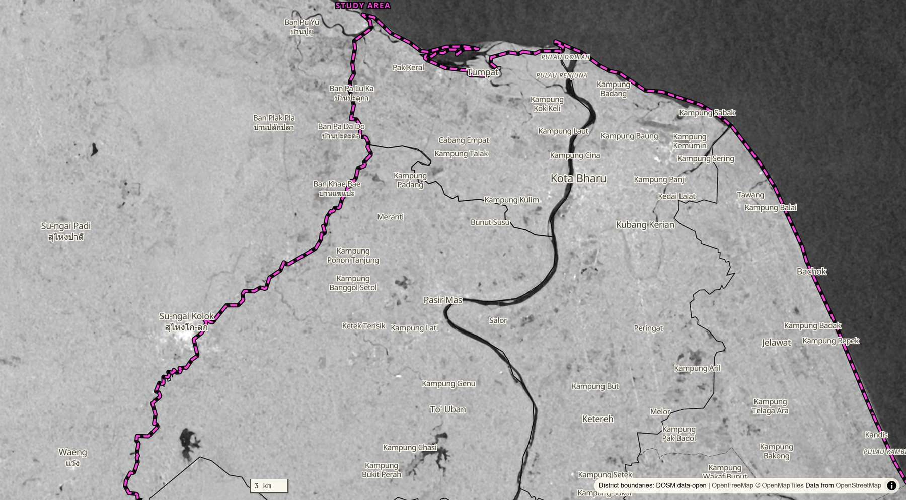
(b) 29 Nov 2024, flood
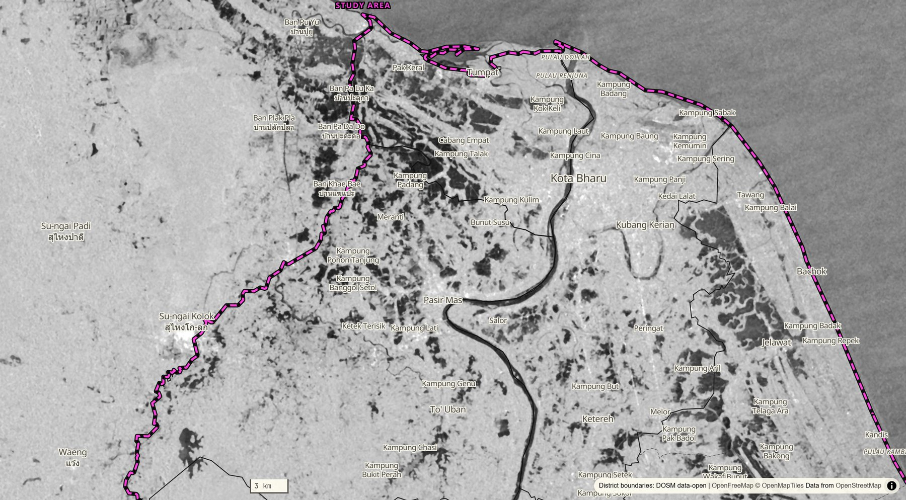
Turning those images into classes gives the flood map in Figure 3. On 29 November our map shows 20,285 ha of new flood water across the seven study districts. The range is 17,247–20,285 ha when the water threshold moves by 1 dB; the upper end equals the main estimate because −15.5 dB is already the ceiling. Only 205 ha were classed as “possible flood”. Of the new flood water, 84% lay on cropland, 12% on grassland and 2% under trees. Almost none was on built-up land, because 18,296 ha of town pixels in these districts are greyed out as “radar unreliable”.
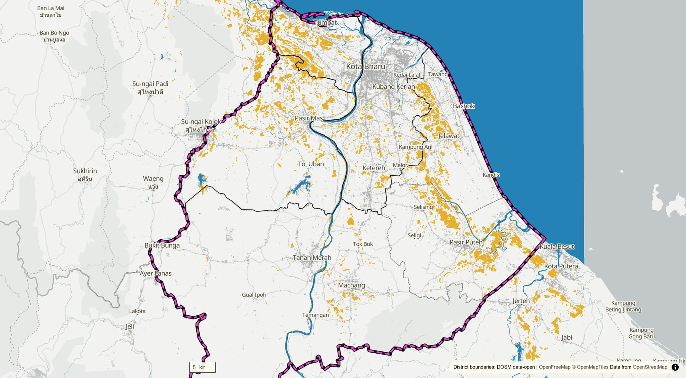
Figure 4 follows the flood through time and across districts. The two “before” passes count zero by design. The total jumps to its peak on 29 November, then falls to 2,243 ha on 6 December, 2,513 ha on 11 December and 1,219 ha on 18 December. Pasir Puteh (4,774 ha) and Pasir Mas (4,680 ha) had the most flooded land on the peak date. Pasir Mas also had the most evacuees that day [18].
(a) New flood water per pass, study districts (ha)
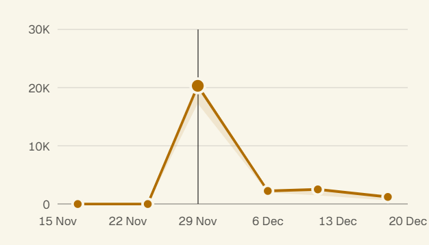
(b) New flood water by district, 29 Nov 2024 (ha)
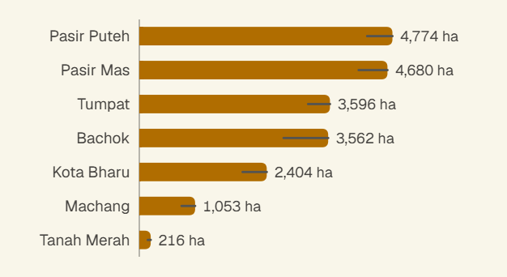
The flood followed three very wet days (Figure 5). NASA POWER estimates 126.6 mm on 26 November, 131.6 mm on 27 November and 119.9 mm on 28 November, averaged over the study box. The next radar pass, on the evening of 29 November, caught the flood near its peak. Over 10 November–20 December the box received about 1,273 mm.
(a) Kelantan, daily rainfall (mm); ▲ = radar pass
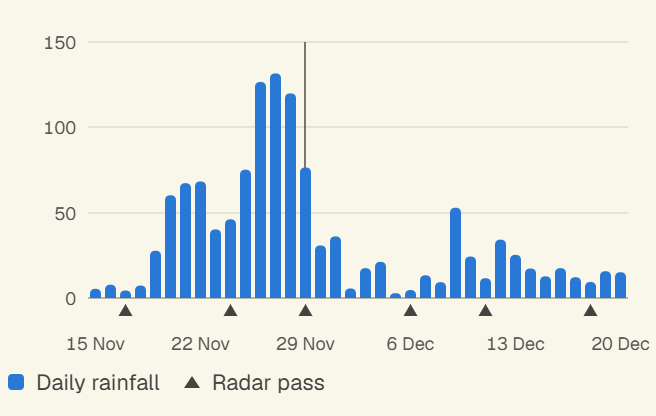
(b) Kedah, daily rainfall (mm); ▲ = radar pass
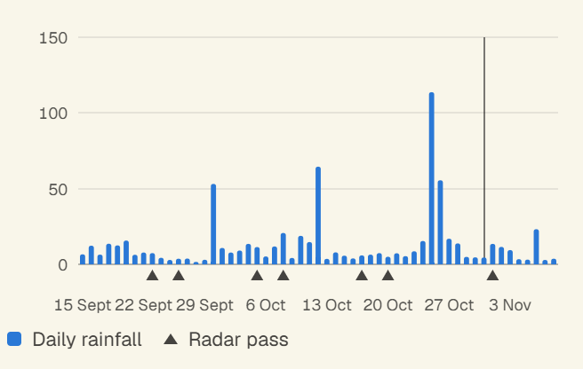
Most flooded land drained quickly: 16,933 ha were seen flooded on one pass only. But 4,138 ha were flooded on two or more passes, at least about a week, and 557 ha stayed under water for three passes in a row, at least 12 days. Figure 6 shows where. Tumpat stands out: 1,377 ha of its land stayed flooded, 38% of its peak flood area, against 26% in Pasir Mas and 10% in Pasir Puteh. That fits a low delta, where high tides slow drainage to the sea [29].
(a) Passes on which each spot held new flood water
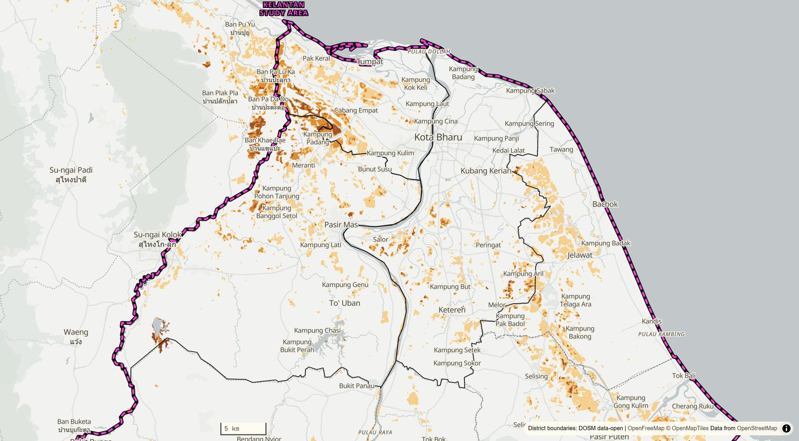
(b) Land flooded on 2 or more passes, by district (ha)
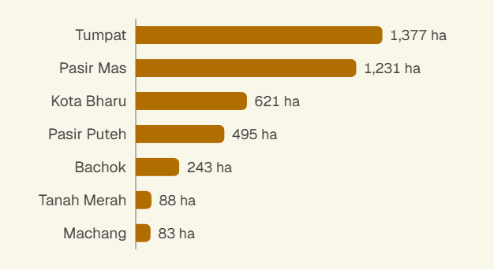
About 244,400 people lived within 250 m of new flood water on 29 November, and about 14,900 lived where our map shows water (Table 4). For scale, the news counted 65,993 people in relief centres across the whole state that day [18]. The two numbers measure different things, since not everyone near the water had to leave home. They show that the radar map sits in the right order of magnitude for planning relief.
Table 4. Kelantan results by study district, 29 November 2024.
| District | New flood water (ha) | Range (ha) | Flooded ≥ 2 passes (ha) | People within 250 m | People inside water |
|---|---|---|---|---|---|
| Pasir Puteh | 4,774 | — | 495 | 27,219 | 2,017 |
| Pasir Mas | 4,680 | 4,137–4,680 | 1,231 | 64,190 | 3,665 |
| Tumpat | 3,596 | — | 1,377 | 46,818 | 4,076 |
| Bachok | 3,562 | — | 243 | 36,182 | 2,257 |
| Kota Bharu | 2,404 | 1,949–2,404 | 621 | 55,258 | 2,433 |
| Machang | 1,053 | — | 83 | 11,548 | 404 |
| Tanah Merah | 216 | — | 88 | 3,212 | 90 |
| All seven districts | 20,285 | 17,247–20,285 | 4,138 | 244,427 | 14,942 |
Ranges come from moving the water threshold by ±1 dB; “—” means the district range is shown in the app but not repeated here. People: WorldPop 2024 (constrained, 100 m). Exposure estimates, not counts of victims.
NISAR’s HH and HV channels tell a clear story (Figure 7). In late September only 2% of the cropland seen by the radar held water (2.0% on 23 September, 1.8% on 26 September), even though Phase I began on 23 September. The share rose to 7.5% and 6.1% on 5 and 8 October, to 22.4% and 22.0% on 17 and 20 October, and to 44.8% on 1 November (range 39.0–50.5%). The two tracks look from opposite sides, yet agree closely on neighbouring dates, which gives us confidence the signal is real.
(a) Share of cropland with field water (%), per track
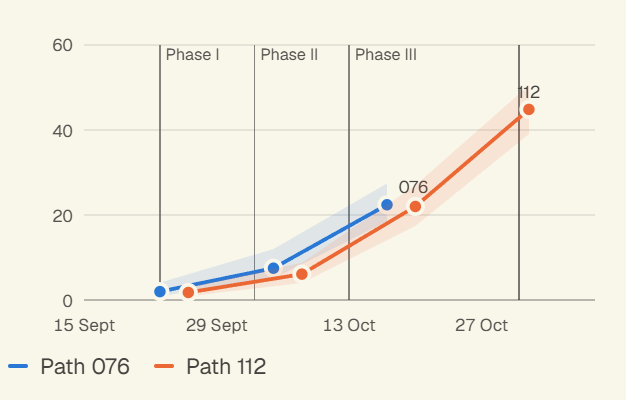
(b) Cropland by the pass that first showed water (ha)
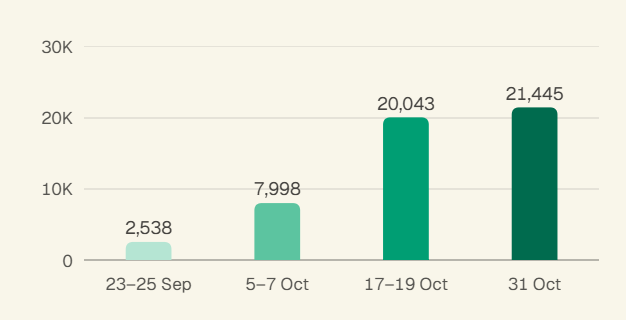
Most fields got their water only after Phase III began on 13 October. Another 54,029 ha of cropland showed no field water by 1 November. In a drought year, with dam storage at 35.76% in mid-September and 40.13% on 13 October [24, 30], this points to planting running well behind schedule. The biggest jump followed the wettest day of the season, 113.7 mm on 25 October. Figure 8 maps the first-flooded date of every field, and Table 5 breaks the season down by district.
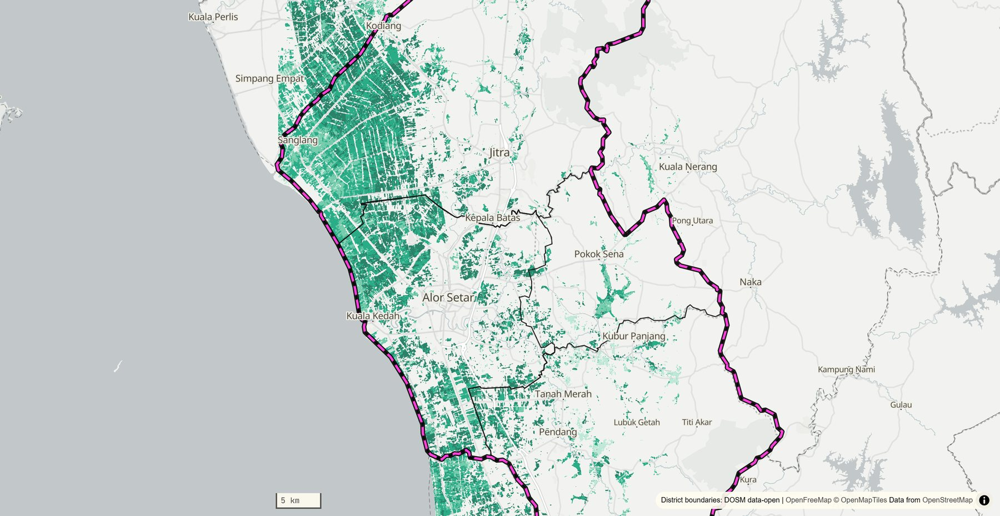
Table 5. Share of cropland with field water by Kedah study district (%).
| District | Cropland (ha) | 23 Sep | 26 Sep | 5 Oct | 8 Oct | 17 Oct | 20 Oct | 1 Nov |
|---|---|---|---|---|---|---|---|---|
| Kota Setar | 28,634 | 1.2 | 0.8 | 5.1 | 4.5 | 16.5 | 19.6 | 46.7 |
| Kubang Pasu | 31,488 | 0.8 | 0.6 | 8.7 | 5.9 | 32.6 | 28.0 | 55.1 |
| Pokok Sena | 6,134 | 3.1 | 3.1 | 9.0 | 7.7 | 14.8 | 14.7 | 23.8 |
| Pendang | 17,094 | 6.8 | 4.7 | 6.6 | 4.2 | 11.2 | 9.6 | 20.9 |
| Radar box, all cropland seen | ~99,300 | 2.0 | 1.8 | 7.5 | 6.1 | 22.4 | 22.0 | 44.8 |
Track 076_D_085: 23 Sep, 5 Oct, 17 Oct. Track 112_A_005: 26 Sep, 8 Oct, 20 Oct, 1 Nov. Pendang is only 63% inside the radar box.
A map shows one moment; the radar keeps a diary. Clicking any spot in the app plots its brightness on every pass (Figure 9). The Kelantan field reads about −8 to −11 dB before the flood, drops to −21.6 dB on 29 November and stays below the water line for four passes in a row. The Kedah field shows the polarisation story: HH (water) and HV (plants) both drop when the field is flooded in late October. These per-spot time series are how SAR rice studies separate flooding from growth [28].
(a) A Tumpat field: VV on every Sentinel-1 pass (dB)
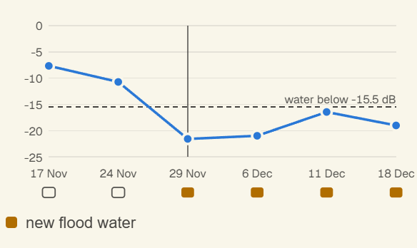
(b) A Kota Setar field: HH and HV on every NISAR pass (dB)
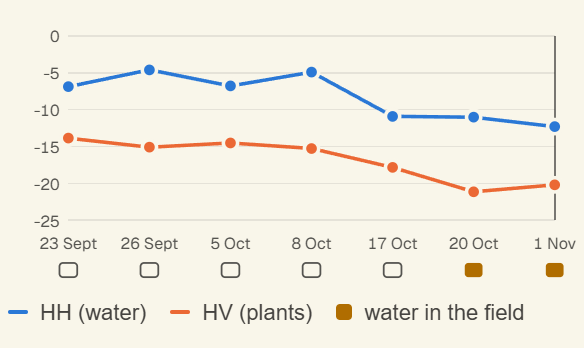
Table 6 and Figure 10 summarise the comparison with DSWx-S1. In Kelantan at the flood peak, our map and NASA’s agree with an F1 of 0.75 and an IoU of 0.60 (precision 0.79, recall 0.72). On dry dates there is little water on land, so a few river edges decide the score, and F1 falls to 0.07–0.36. In Kedah the picture is different and more interesting. Recall rises from 0.16 to 0.97 over the season, meaning NISAR finds almost all of the water Sentinel-1 sees. Precision stays low, however (0.27 on 1 November), meaning NISAR maps about 3.7 times more field water than Sentinel-1 does.
Table 6. Agreement with OPERA DSWx-S1.
| Comparison | Date | F1 | IoU | Precision | Recall | Note |
|---|---|---|---|---|---|---|
| Kelantan (same radar; land only) | 29 Nov 2024 | 0.752 | 0.602 | 0.791 | 0.716 | Flood peak; κ = 0.737 |
| Other 5 passes | 0.07–0.36 | 0.04–0.22 | — | — | Little water on land | |
| Kedah (NISAR vs Sentinel-1D; cropland) | 23 Sep 2026 | 0.030 | 0.015 | 0.017 | 0.157 | DSWx 3 days apart |
| 20 Oct 2026 | 0.272 | 0.157 | 0.159 | 0.931 | 1 day apart | |
| 1 Nov 2026 | 0.424 | 0.269 | 0.271 | 0.965 | 1 day apart |
(a) Kelantan, land, VV: 17 Nov (grey) vs 29 Nov (orange)
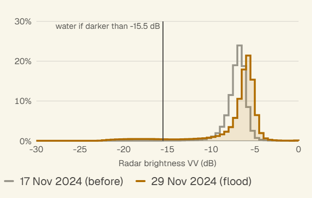
(b) Kedah cropland, HH: 26 Sep (grey) vs 1 Nov (blue) MYT
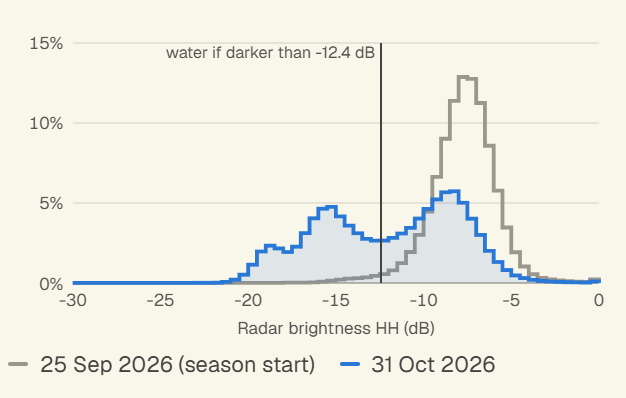
Kelantan. Rain was the trigger: three days of more than 100 mm a day filled the Kelantan River, which drains most of the state. The low, flat landscape spread the water across paddy and grassland. In the delta, high tides slowed drainage to the sea, which is why Tumpat stayed wet longest. Changes in land use upstream add runoff, but a HEC-HMS river-modelling study of the basin found that changes in rainfall had roughly 3–4 times the effect of land-use change [33]. We therefore do not claim that forest loss caused this flood.
Kedah. Here people change the surface, on purpose and on a schedule. MADA releases water by phase; farmers flood the fields, level them and sow. In 2026 low dam storage slowed the releases, and the radar shows most fields filling two to four weeks after their phase start dates.
VV at C-band is enough for open floods in Kelantan: the change from bright land to dark water is several decibels, and the histogram splits cleanly (Figure 10a). For paddy, HH and HV together are needed. HH turns dark when a field is flooded, but smooth bare soil can look similar. HV helps separate the two: it stays dark for open water and climbs as the rice canopy grows. The HH/HV colour composite in Figure 11a shows this directly, with dark flooded fields next to brighter fields of growing plants.
(a) NISAR HH/HV colour composite, 1 Nov 2026
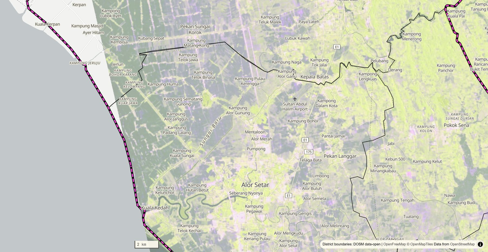
(b) Where NISAR and Sentinel-1 disagree, 1 Nov 2026
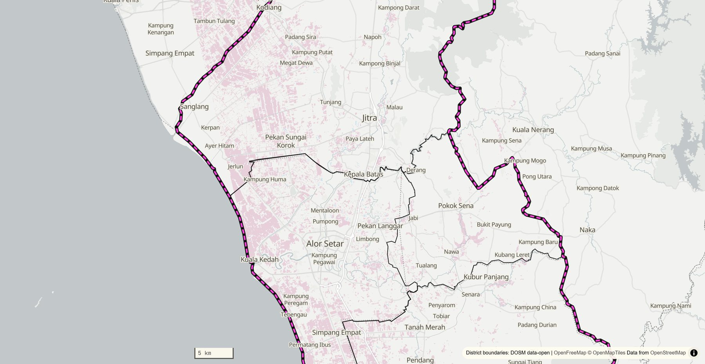
The Kedah comparison raises a genuine scientific question. NISAR at L-band sees far more field water than Sentinel-1 at C-band, and almost all of Sentinel-1’s water lies inside NISAR’s. There are two explanations. L-band may detect shallow water under young rice that C-band misses, which is what the longer wavelength promises. Or smooth, freshly tilled soil may look like water at L-band. The pink areas in Figure 11b are exactly where the two radars disagree, so they are the places to send a field check. Without ground truth we cannot yet tell which explanation holds, and we say so in the app rather than hide it.
Three groups could use this work today. Disaster managers (NADMA, JKM and district offices) could get a cloud-free map of where water spread, how long it stayed and how many people live beside it, every 6–12 days, within days of a pass. MADA and the Department of Agriculture could use a planting-progress monitor that shows which blocks received water and when, which is most valuable in drought years. Insurers, researchers and journalists could use district numbers with ranges, sources and a picture export for reports.
Each group needs the same thing: a map it can trust of where water is, delivered soon after each pass and in words a non-specialist can act on. Today that picture comes from field reports and cloud-free optical images, which are rare in the monsoon. Radar fills that gap without new satellites or new data costs.
We see the project as an open public-good core with paid services on top. The map, the code and the data recipes stay free for every place NISAR covers, so communities and researchers never pay to see their own floods. Agencies that want the maps delivered on a schedule, for their own areas and inside their own systems, would pay for that service. Table 7 sets out the plan. The costs are our estimates and would be confirmed in the pilot.
Table 7. Path from prototype to a service.
| Users | NADMA and district disaster offices (where water spread, how long it stayed, who lives beside it); MADA and the Department of Agriculture (planting progress, irrigation checks in dry years); insurers, researchers and journalists (district numbers with ranges and sources) |
|---|---|
| Stays free | The open web map, the code (MIT licence) and the pipeline recipes, for any area NISAR covers |
| Paid services | (1) Setting up a new region: boundaries, thresholds checked against NASA’s water maps. (2) Automatic runs after every pass, with an alert when new water crosses a set level. (3) Feeding the maps into an agency’s own dashboard or GIS. (4) District reports on request |
| Running cost (estimate) | NASA data: free. Hosting: the site is static, so a free plan serves the prototype and a commercial plan costs about US$20 a month. Processing: a small cloud machine running for minutes after each pass. We estimate under RM300 a month per region, including storage |
| Pilot | One monsoon season with one Kelantan district disaster office and one MADA region. Target: a map delivered within 48 hours of each pass. Success measures: delivery time, agreement with field reports and photos, and whether the office used the map in a decision |
| Funding | The pilot through a research or innovation grant or a university partnership; after the pilot, yearly service agreements with agencies, priced per region |
| Scaling | NISAR covers nearly all of Earth’s land twice every 12 days, and OPERA processes Sentinel-1 worldwide. A new region needs one configuration entry (a bounding box and its districts) and a re-run of the pipeline; the README documents an “Add your town” recipe. Next would be other flood-prone states and rice granaries in Malaysia, then river basins across Southeast Asia |
| Risks and answers | NISAR data are still partly provisional, so the pilot uses validated passes where they exist. Agencies need proof before relying on a new map, so the pilot includes field checks. The open L-band question in Kedah (Section 5.3) becomes a pilot measurement |
Radar turns cloudy monsoon weeks from a blind spot into a record. With free NASA data we mapped about 20,300 ha of new flood water in Kelantan on 29 November 2024, showed that about 4,100 ha stayed flooded for a week or more, and estimated that about 244,000 people lived within 250 m of it. Our map agrees with NASA’s own water map at an F1 score of 0.75. With NISAR’s first season of L-band data over Kedah we watched the rice granary fill from 2% to 45% between late September and 1 November, weeks behind MADA’s schedule in a drought year. We also found that NISAR detects several times more shallow field water than C-band radar, a question worth testing on the ground.
Next we plan to add a slope and HAND mask, switch rainfall to GPM IMERG, and collect field observations in Kedah to settle the L-band question. We also want to watch the 2026–27 Kelantan monsoon with validated NISAR data as it arrives. Everything we built (code, data recipes and the web map) is open, so the same tools can serve any river or rice basin that NISAR sees.
We thank NASA, ISRO and the NASA Space Apps Kuala Lumpur organisers. We acknowledge the use of imagery provided by services from NASA’s Global Imagery Browse Services (GIBS), part of NASA’s Earth Science Data and Information System (ESDIS). OPERA products contain modified Copernicus Sentinel data (2024, 2026). No agency named here has reviewed or endorsed this prototype.
AI use. We used Claude (Anthropic) via Claude Code for brainstorming, research, data analysis and coding. The team chose the problem, the study areas and the questions, and reviewed the results, including every AI district analysis. Every number in the AI analyses is checked by code against our results (Section 3.7). No AI model runs in the web page. Full disclosure: AI_USAGE.md in the repository.
Data and code. Code (MIT licence), the pipeline and all derived maps and statistics: github.com/LemonAidLee/NASA-web. Every granule used is listed in public/data/provenance.json, and all dataset licences are in DATA_LICENSES.md.
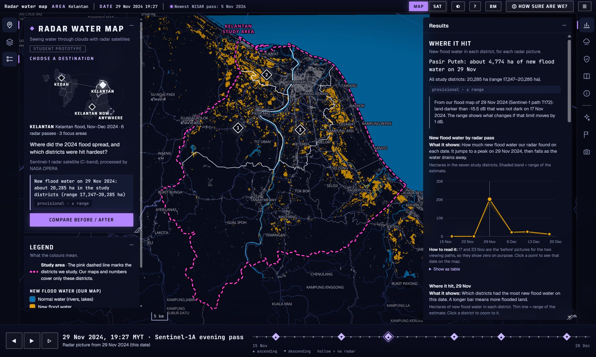
Main features: before/after swipe; HH/HV “water vs plants” swipe; spot history on click; layers with info and opacity; “How sure are we?” panel with agreement scores, thresholds and limitations; daily rainfall linked to the radar dates; AI analysis of six focus districts; guided story in six steps; live view of the current Kelantan monsoon from NASA’s catalogue; “Anywhere” view of NASA radar imagery worldwide; save-a-picture export with caption and credits; settings remembered between visits.
| Criterion (10 points each) | Where it is addressed |
|---|---|
| Relevance to theme | Answers all three “Dancing with the SARs” questions: why the surface changes (5.1), which polarisations show it (5.2) and what NISAR can do next (5.3, 5.5, 5.6). |
| Originality | NISAR’s first Kedah rice season mapped field by field; per-spot radar histories; how long flood water stayed; people near water; AI text with automated number checking. |
| Construction technique | Reproducible 12-step pipeline with self-checks (3.1); same-track change detection; per-track thresholds with a bimodality test; static, server-free web app. |
| Diversity of material used | NISAR, OPERA RTC-S1 and DSWx-S1, NASA POWER, GIBS, CMR/ASF, JRC, WorldCover, WorldPop, DOSM and news context (Table 1). |
| Demonstrated understanding | Radar physics explained (1.2, 5.2); honest validation framing (3.4); limitations stated plainly (5.4). |
| Degree of practicality | Works in any browser and on phones, in English and Bahasa Melayu; numbers with ranges and sources; picture export for reports. |
| Degree of commercialisation | Named users and their needs (5.5); a free open core with paid services, running-cost estimate, a one-season pilot with success measures, funding route and scaling path (5.6, Table 7). |
| Materials submitted | This report, the website, the open repository, the 30-second and 3–5 minute videos. |
| Presentation style | Plain-language interface, chart explanations, guided story, live demo. |
| Utilisation of free NASA resources | All radar, rainfall and imagery come from free NASA data and services (Table 1, References 1–4, 10–13). |